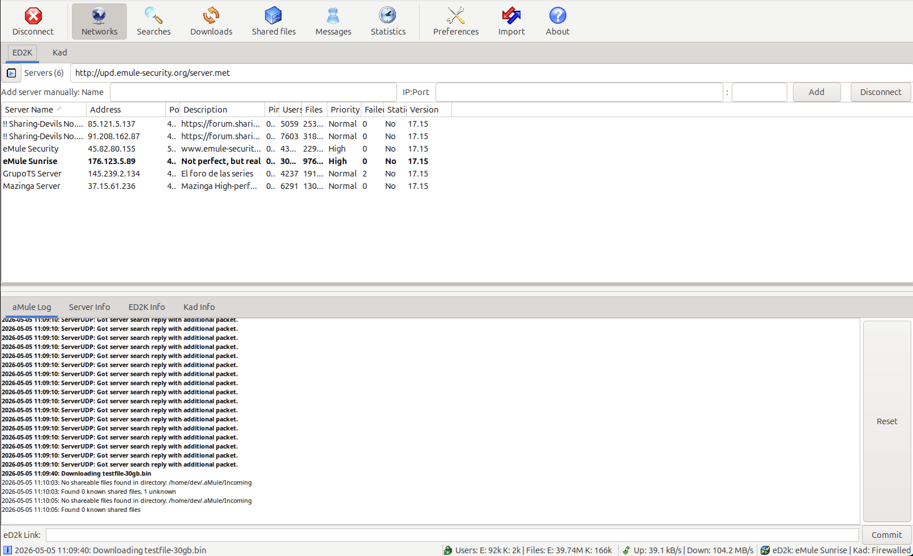
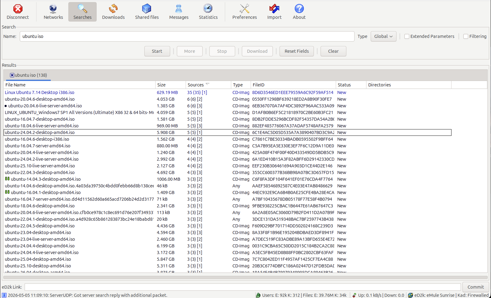
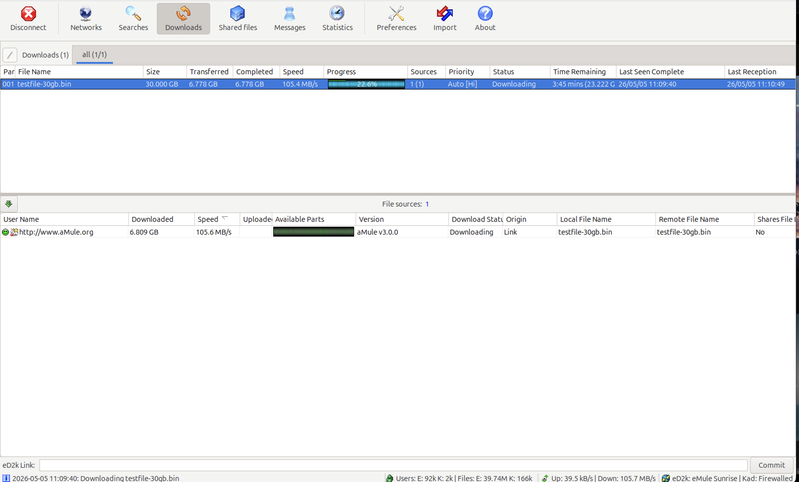
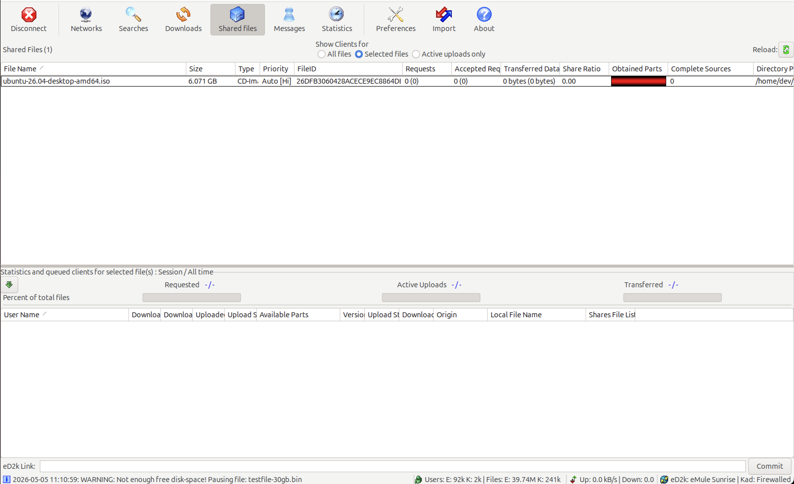

What is aMule?
aMule is a free, GPL-licensed peer-to-peer file-sharing client for the eD2k and Kademlia networks. It's compatible with eMule and runs natively on Linux, macOS, and Windows. The same on-disk state, the same protocol, one binary per major desktop.
After a long quiet period, the project is back under active maintenance — focused not just on bug fixes and modernization, but on dramatic throughput improvements that matter directly for any P2P client.
Download
3.0.0 ships native binaries for every major desktop. Pick your platform:
All artifacts on the latest release page.
3.0.0 highlights
wxWebRequest. Server-met downloads from modern HTTPS endpoints work again.MaxUpload=0 finally means literal unlimited.Throughput, measured
3.0.0 vs 2.3.3 on the same hardware. Single eD2k peer downloading a 30 GB file from a Linux seeder over a local LAN, sustained over the last 30 s of a 90 s window.
vs eMule 0.70b · Windows
Methodology: identical hardware and network for both versions, peer-to-peer between two daemons (no real-network sources). 2.3.3 is approximated by master at the last commit before the throughput rewrites began; the eD2k wire-level path between that commit and 2.3.3 is unchanged. Per-platform breakdown of the seeder-side and leecher-side contributions in the 3.0.0 changelog Performance section.
Screenshots
aMule 3.0.0 GUI — same look on Linux, macOS, and Windows. Click any screenshot to enlarge; use ← → to navigate, Esc to close.
{kind=link}

{kind=link}

{kind=link}

{kind=link}

Features
- eD2k + Kademlia — both networks supported, full eMule wire compatibility.
- Multi-platform — same engine on Linux, macOS, Windows; same on-disk state.
- Headless variants —
amuleddaemon for NAS / VPS, with a remote GUI (amulegui), web UI (amuleweb), and CLI (amulecmd). - Free software — GPL-2.0; no telemetry, no upsells, no built-in ads.
- Modern packaging — AppImage and Flatpak on Linux; macOS .app bundle; Windows portable .zip.
- HTTPS server lists, MaxMindDB country flags — modernized stack, no legacy GeoIP dependency.